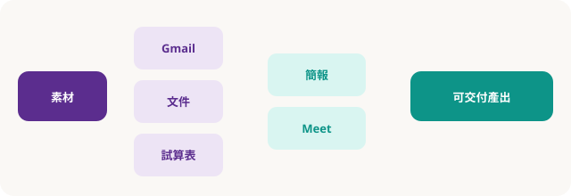

Part 02 · Google 生態系
在郵件、文件、試算表、簡報與 Meet 裡「就地」用 AI
目標不是另開十個分頁，而是讓學員知道：草稿在哪個 App 裡長出來、權限怎麼控、何時該回到 Gemini 網頁做深度對話。
生態系一覽

Gmail
回信草稿、語氣改寫、長信摘要；寄出前必人工讀一遍。
文件／簡報
大綱、改寫、表格化；簡報著重「一頁一訊息」。
試算表
公式建議、分類、清洗邏輯；結果要用抽樣列驗證。
課堂操作節奏
- 同一素材三跑：會議逐字稿 → Gmail 摘要信 → 文件行動清單 → 簡報 5 頁大綱。
- 權限口令：分享連結前檢查「檢視／評論／編輯」；課堂範例用臨時資料夾。
- Meet：會前議程、會後待辦；勿假設自動字幕／摘要在所有租戶都已開啟。
- 何時回 Gemini 網頁：跨多份資料比對、長推理、需要多輪追問時。
品質檢查清單
- □ 收件人、主旨、日期是否被模型改錯？
- □ 數字、人名、職稱是否與來源一致？
- □ 簡報是否每頁只有一個核心訊息？
- □ 試算表公式在邊界值（空白、0、文字混入）是否仍合理？
隨堂測驗 · C2Q1
用 AI 草擬客戶郵件後，寄出前最重要的是？
隨堂測驗 · C2Q2
試算表裡採用模型建議的公式時，應？
隨堂測驗 · C2Q3
跨多份長文件做深度比對，較合適的入口通常是？